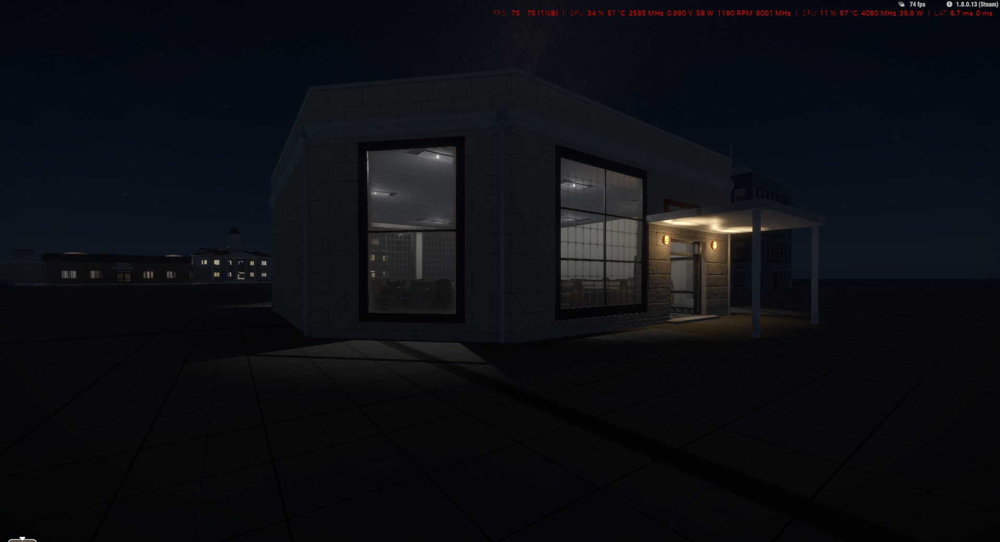
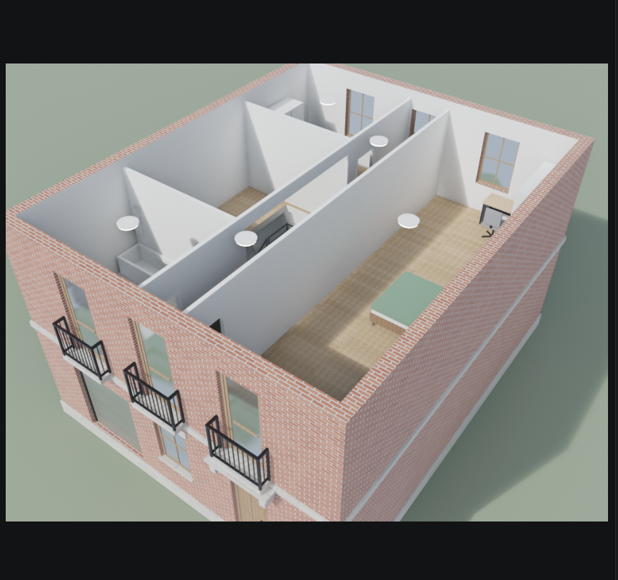
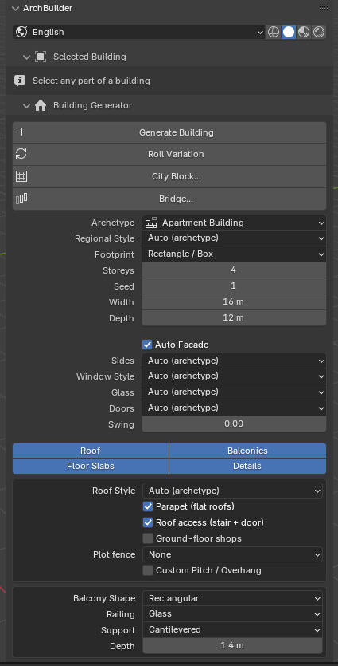
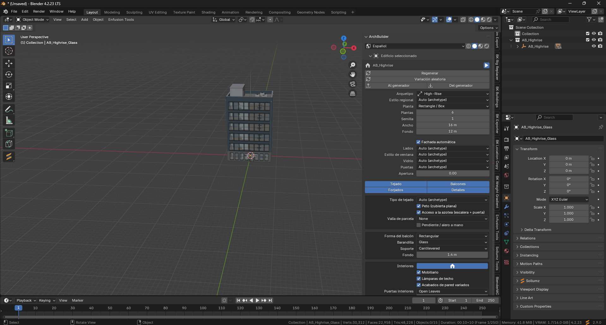
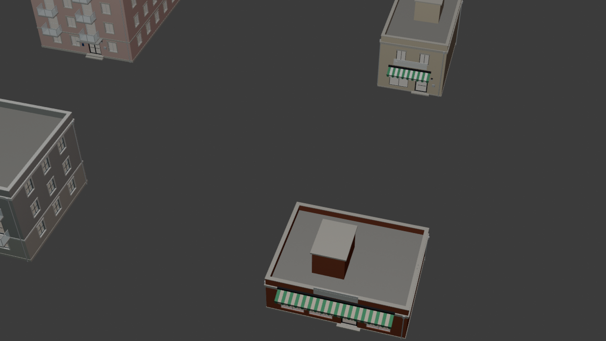
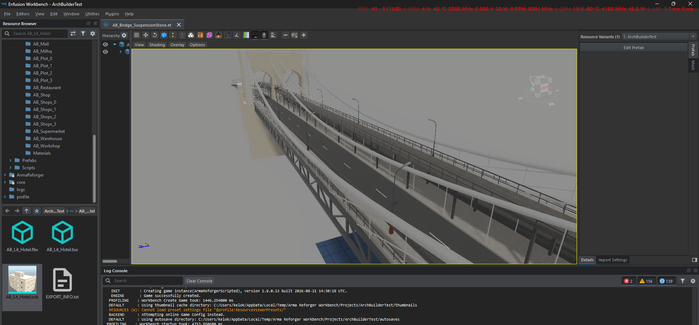
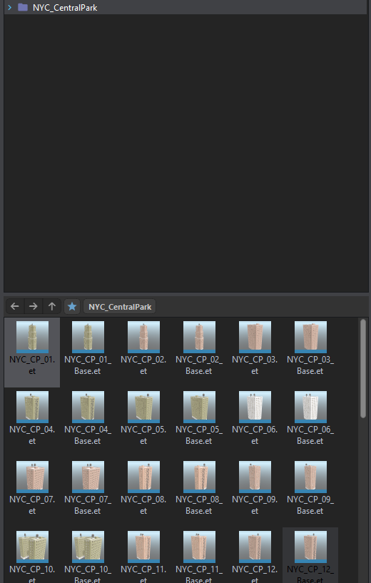
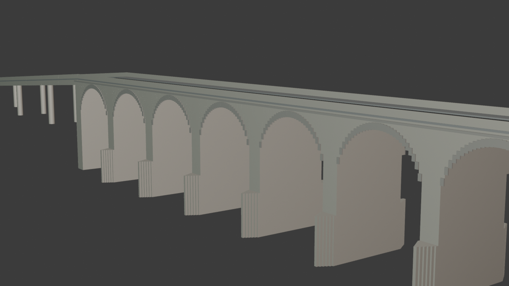
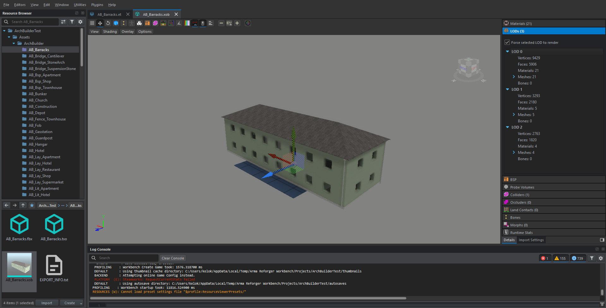

ArchBuilder es una herramienta procedural para Blender: genera edificios, manzanas, puentes e interiores amueblados, y los exporta como prefabs nativos de Arma Reforger — puertas que abren, cristales rompibles, colisiones, LODs e iluminación interior. Sin pelearte con el Workbench.
Pago único · Garantía de 14 días · Funciona con Blender 4.2 LTS · Se desbloquea con tu clave personal

Vídeo de demostración de ArchBuilder: del boceto en Blender al edificio jugable en Reforger.
Tres capturas directas de Blender 4.2 con ArchBuilder 2.27.2: un bloque con interiores, una manzana completa y un viaducto de piedra.

Adosado de ladrillo: tabiques, baño, dormitorio y balcones de forja.

Generate, Roll, City Block, Bridge: todo a un clic en la pestaña N.

Torre High-Rise de 6 plantas: cambias un valor y se reconstruye.

Seis edificios de una semilla, listos para multi-export.

Puente colgante compilado como prefab, junto a toda la colección exportada.

City Block exportado a NYC_CentralPark: cada edificio con su .et y su _Base.et.

Tajamares, parapeto y rampas de acceso sobre pilas.

Barracks: 9.429 → 3.293 → 2.763 vértices según distancia.
Lo que rompe los mapas de Reforger nunca se ve en la captura: colisiones, puertas, luz interior y rendimiento. ArchBuilder resuelve exactamente eso.
| Una malla cualquiera | Con ArchBuilder |
|---|---|
| Sin colisión útil: se atraviesa o bloquea balas mal. | ✓ Colisores UTM_BD_* y UBX_* con .gamemat físico por material. |
| Puertas pintadas que no abren. | ✓ DoorSet_Village / Double / Garage / PrisonCell con ángulo, sonido y navmesh. |
| Cristales opacos o falsos. | ✓ Ventanas Win_village_E_A y cristales Glass_WxH rompibles, los del juego. |
| Interior vacío o negro. | ✓ Planta que respeta la fachada, escalera recorrible, ProbeHouse y portales de luz PRT_*. |
| 100k caras a 200 metros: lag. | ✓ LODs EXT/INT (29k → 3,5k), vanilla_floors 1116 → 156 entidades, BSP/OCC. |
| Tardes peleando con .et, .emat y GUIDs. | ✓ El addon se escribe y compila solo en el Workbench, con GUIDs estables. |
ab.generate_building, ab.city_block (6 distritos, parcela + calle) y ab.roll_variation con 8 candados. 4 huellas, 1–60 plantas, 5 tejados, proporciones REAL o REFORGER.
ab.draw_walls con cotas en vivo, huecos con un clic en 6 estilos de ventana y 4 de puerta, balcones, columnatas, 5 escaleras y cortadores paramétricos.
Tabiques que caen en machones (nunca en ventanas), escalera real con hueco de forjado, ascensor desde 5 plantas y ~700 muebles vanilla encajados sin atravesar paredes.
4 regiones (NY, Haussmann, colonial, panel soviético) sobre cualquier arquetipo, y 7 puentes circulables — Brooklyn, Queensboro, Hell Gate, atirantado, viaducto…
Procedurales con UV en metros, vista previa con las texturas reales del juego (.edds→.dds) y override por material: textura, tamaño, tinte y gamemat.
ab.rf_export escribe .fbx/.xob/.emat/.et, encola la compilación, abre el Workbench (arranca Steam si hace falta) y te deja el prefab abierto.
Comisaría con celdas de reja, juzgado con estrado, iglesia con nave de 6,6 m, campanario y bancos BenchChurch. Extras propios: pórtico, reloj, andén con vías, torre de mangueras, helipuerto, perímetro.
Tienda con caja CashierShop_01, gasolinera con surtidores FuelStation_E_01 que repostan de verdad, obra con grúa torre y andamio transitable, hotel con baño por habitación.
Búnker de hormigón de 0,8 m con troneras, hangar en arco de 13×6,5 m para vehículos, FOB con tiendas TentUSSR_01 destructibles, generador y palés de suministro.
addons/data y pulsa ab.rf_scan una vez.Pago único en Ko-fi. Recibes tu clave personal, la introduces en el panel License de Blender y se desbloquea todo: generador, ciudad, puentes, export, updates y soporte.
Venta como descarga digital en Ko-fi. Incluye el ZIP personalizado, vanilla_lib 1.7, guía, chuleta de atajos y updates 2.x.
No. El plugin escribe el .gproj, materiales, GUIDs y prefabs, encola la compilación y abre el Workbench por ti. Solo necesitas las Reforger Tools de Steam y haber extraído addons/data una vez para el escaneo.
Sí. No son imitaciones: son hijos DoorSet/Window/Glass vanilla directos, con ángulo de apertura, sonido, acciones y navmesh. Los cristales usan gamemat Glass separado.
Sí: vanilla_floors reduce 1116 → 156 entidades, los LODs bajan 29k → 3,5k caras, y las luces son de radio corto para no quemar tabiques.
No. La 2.27.x exige Blender 4.2+ (formato de extensiones, blender_manifest.toml).
Sí: modos FULL/FRAME/HOLE o tu propio asset (ab_asset_window/ab_asset_door), escalado al hueco automáticamente.
No: es personal e intransferible, e incluye updates 2.x, soporte y rol en Discord.
Genera, amuebla, exporta, compila, juega. ArchBuilder 2.27.2 por Arribas.
Conseguir ArchBuilder · 39 €